Plot Raw Values, Moving Average, and Monotonized Moving Average
plotCutsIDM.RdVisualizes the IDM rating process for each rater, showing raw ratings, smoothed moving averages, the final isotonic regression line used to determine cut scores, and optionally filter residuals. Optional population silhouettes show distribution shape only; their height does not represent rating stages or density-axis values. Multiple populations can overlap with transparent fills.
Usage
plotCutsIDM(
res_list,
est_col = NULL,
show_raw = TRUE,
show_smoothed = TRUE,
show_residuals = FALSE,
show_aggregate = FALSE,
show_aggregate_labels = TRUE,
show_cut_values = TRUE,
show_item_numbers = TRUE,
cut_value_digits = 0L,
item_number_size = 2,
cut_value_size = 2.6,
aggregate_label_size = 3,
pv_data = NULL,
pv_cols = NULL,
respondent_id_col = NULL,
pv_id_col = NULL,
pv_value_col = NULL,
weight_col = NULL,
input_format = c("auto", "long", "wide"),
pv_missing = c("error", "drop"),
density_bw = NULL,
density_adjust = 1,
population_height = 0.25,
population_fill = "grey50",
population_alpha = 0.15,
population_col = NULL,
population_colors = NULL,
show_percentages = TRUE,
percentage_digits = 1L,
percentage_size = 3,
show_population_stats = TRUE,
population_stats_digits = 2L,
show_caption = FALSE
)Arguments
- res_list
A list returned by
computeCutsIDM()containing the processed data and cut score coordinates.- est_col
Optional character scalar. Label to use for the item difficulty axis. If
NULL, the value stored bycomputeCutsIDM()is used.- show_raw
Logical scalar. If
TRUE, raw ratings are shown as points and as a thin line connecting items ordered by difficulty.- show_smoothed
Logical scalar. If
TRUE, the non-monotonized moving average is shown as a thin dashed blue line.- show_residuals
Logical scalar. If
TRUE, an additional residual panel is shown for each rater. Residuals are computed as raw rating minus smoothed moving average.- show_aggregate
Logical scalar. If
TRUE, an additional aggregate panel is shown. It overlays the monotonized rater curves in rater-specific colors and draws the mean cut scores fromres_list$cuts_summary.- show_aggregate_labels
Logical scalar. If
TRUE, rater names are shown near the right-hand end of the monotonized curves in the aggregate panel. Only used whenshow_aggregate = TRUE.- show_cut_values
Logical scalar. If
TRUE, numeric cut values are shown next to the vertical cut lines in individual panels and, when requested, in the aggregate panel.- show_item_numbers
Logical scalar. If
TRUE, item position numbers are shown next to the raw grey points in the individual rater panels. Only used whenshow_raw = TRUE.- cut_value_digits
Non-negative integer scalar. Number of digits after the decimal point used for rounding cut value labels. The default
0Lshows rounded whole-number cut values.- item_number_size
Finite non-negative numeric scalar. Text size in millimetres for item position numbers next to raw points. Default is
2. Only used whenshow_raw = TRUEandshow_item_numbers = TRUE.- cut_value_size
Finite non-negative numeric scalar. Text size in millimetres for numeric cut value labels in individual and aggregate panels. Default is
2.6. Only used whenshow_cut_values = TRUE.- aggregate_label_size
Finite non-negative numeric scalar. Text size in millimetres for rater names in the aggregate panel. Default is
3. Only used whenshow_aggregate = TRUEandshow_aggregate_labels = TRUE.- pv_data
Optional wide- or long-format data frame of plausible values for one domain, optionally grouped into populations by
population_col, already on the same metric as the item estimates and cuts. Supplying it adds background silhouettes to rating panels. DefaultNULLleaves the plot unchanged. Silhouettes show distribution shape only; their height does not represent rating stages or density-axis values.- pv_cols
Character vector of PV column names, required for wide input. Wide input has one row per respondent. Other numeric columns are never selected automatically.
- respondent_id_col
Optional respondent ID column, unique within each population for wide input; required for long input. IDs may repeat between populations. These are population respondent IDs, not rater IDs.
- pv_id_col
PV identifier column for long input. Required together with
pv_value_colandrespondent_id_col. Each respondent-PV combination must be unique within its population.- pv_value_col
Numeric PV value column for long input.
- weight_col
Optional sampling-weight column. Default
NULLuses equal weights. Weights must be finite, non-missing, non-negative, and constant across PVs for each respondent within its population. Zero-weight observations are excluded.- input_format
PV input layout.
"auto"selects long format whenpv_id_colorpv_value_colis supplied, and wide format otherwise.- pv_missing
Default
"error"rejects missing PVs and omitted respondent-PV rows."drop"omits them with a warning and renormalizes weights within each PV. Infinite PVs and invalid weights always cause an error. Every PV must retain at least two observed respondents with positive weights.- density_bw
Optional positive finite bandwidth in score units. Default
NULLaverages unweightedstats::bw.nrd0()bandwidths across PVs within each population, then averages those population means. All populations and PVs share this bandwidth. Sampling weights affect the density estimates, not automatic bandwidth selection.- density_adjust
Positive finite multiplier for the common density bandwidth. Default
1.- population_height
Finite fraction between zero and one of the rating-axis range occupied by the highest silhouette peak across all populations. Default
0.25. All silhouettes use the same height factor. This is a display setting for distribution shape only; silhouette height does not represent rating stages or density-axis values.- population_fill
Character vector of silhouette fill colors. An explicitly supplied single color applies to all populations. Otherwise supply exactly one color per observed population, in order of first appearance in the data (the population legend order); vector names are ignored. Too few or too many colors, including an empty vector, trigger a warning and restore the default colors. If omitted, ungrouped input uses
"grey50"; grouped input uses the automatic palette described underpopulation_colors. Explicitpopulation_colorstakes precedence.- population_alpha
Finite silhouette opacity between zero and one. Default
0.15.- population_col
Optional population grouping column in wide or long PV input. Labels must be non-missing and non-empty. Groups are drawn and listed in their order of first appearance; unused factor levels are ignored. Default
NULLtreats all rows as one population.- population_colors
Optional named character vector with exactly one color per observed population label. Requires
population_coland takes precedence overpopulation_fill. With neither color argument supplied, grouped input uses blue and orange for two groups (blue for one), or a qualitative palette for more groups. A separate population fill legend is added.- show_percentages
Logical scalar. Default
TRUEadds percentage tables to rating panels whenpv_datais supplied, with one colored row per population in legend order. Residual panels have no percentage labels.FALSEhides the tables and their additional caption. Has no plotting effect withoutpv_data.- percentage_digits
Integer scalar from zero to ten. Decimal places in percentage labels. Default
1L. Displayed totals can differ slightly from 100 percent because of rounding.- percentage_size
Finite non-negative percentage-table text size in millimetres. Default
3. Reduce this size or increase figure width for many intervals or small panels.- show_population_stats
Logical scalar. Default
TRUEdisplays M and SD below each population name in the fill legend whenpv_datais supplied. For ungrouped PV input they appear in the subtitle.FALSEhides these statistics and their caption line independently ofshow_percentages. Has no plotting effect withoutpv_data.- population_stats_digits
Integer scalar from zero to ten. Decimal places in displayed M and SD values. Default
2L. Useggplot2::theme()to adjustlegend.textorplot.subtitletext size.- show_caption
Logical scalar. Default
FALSEhides explanatory plot captions. Set toTRUEto explain the population silhouette and, when displayed, percentages and M/SD below the plot. Does not affect statistics, percentage labels, or the subtitle. Has no plotting effect withoutpv_data.
Details
One main idea of the IDM method is to account for rater noise by smoothing and monotonizing the relationship between item difficulty and the assigned levels. If show_raw = TRUE, grey points and a thin grey line show the original rater assignments after ordering items by difficulty. If show_smoothed = TRUE, a thin dashed blue line shows the moving average before monotonization. The red line represents the monotonized isotonic curve used to find the vertical intercepts. If the smoothed curve is already non-decreasing, the blue dashed line lies directly on top of the red line. Vertical cut lines are drawn at the cut scores stored by computeCutsIDM(), which are linearly interpolated boundary crossings of the monotonized curve.
By default, the vertical cut lines are labelled with their numeric difficulty-scale values rounded to whole numbers. The number of digits after the decimal point can be changed with cut_value_digits. The grey raw-rating points in the individual rater panels are labelled with small item position numbers. These labels can be hidden with show_cut_values = FALSE and show_item_numbers = FALSE.
Technically, the plot is constructed from res_list$plot_data. For each rater facet, the x-axis is the item difficulty column stored as est; the y-values are the raw rating stage stage_raw, the smoothed moving average stage_sm, and the monotonized isotonic fit stage_iso. Horizontal lines are drawn at res_list$boundaries. Vertical lines are drawn at the difficulty-scale cuts in res_list$cuts_per_person; therefore the plotted cut positions are on the same x-axis scale as the item difficulties. Interpolated item positions, if needed for tabular summaries, are stored separately in res_list$cut_positions_per_person.
With show_aggregate = TRUE, the plot adds an aggregate panel labelled Mean. This panel overlays the monotonized rater curves from the individual panels as thin colored lines and draws vertical lines at the mean difficulty-scale cuts in res_list$cuts_summary. With show_aggregate_labels = TRUE, the colored curves are labelled by rater name near their right-hand end. Label positions are adjusted vertically when several rater curves end at similar values. These mean cuts correspond to the cut scores reported by summary(res_list). The color legend is reserved for cut score labels; aggregate rater colors are not added to the legend.
With show_residuals = TRUE, the plot uses an additional row of facets. The residual in item \(i\) is \(e_i = r_i - z_i\), where \(r_i\) is the raw rating and \(z_i\) is the smoothed moving average. Residuals are drawn as vertical segments from zero to \(e_i\). The cut lines are repeated in the residual panel so that large local deviations can be inspected relative to the final cut locations.
If computeCutsIDM() stored ordinal rating labels in res_list, these labels are used on the y-axis.
With pv_data, a population silhouette is drawn behind the rating curves and
cut lines in every individual and aggregate rating panel. It shows
distribution shape only: its height is scaled for display and
does not represent rating stages or density-axis values. An optional
plot caption states this distinction when show_caption = TRUE; captions
are hidden by default. The rating axis, curves, and cut calculations are unchanged; residual
panels have no silhouette. The shared x-range expands to include the population
density grid, so item curves may occupy a smaller portion of the plot.
The silhouette starts at the lower rating limit and its peak occupies
population_height times the rating range. The same silhouette and scaling
are used in every rating panel. Gaussian densities are estimated separately for
each PV using normalized sampling weights and then averaged on a common grid
with a common bandwidth. Respondents' PVs are not averaged first. Population
arguments are used only when pv_data is supplied.
With population_col, several silhouettes overlap transparently behind the
same cuts and rater curves. Each population's density is computed and normalized
separately using its own PVs and weights. All populations share one bandwidth
and grid; weights and missing-data checks are handled within populations.
Silhouettes are not stacked or separately stretched to equal peak heights.
Instead, the largest density peak across all populations determines one shared
display scaling factor, preserving relative differences in concentration.
Their height shows distribution shape only and does not
represent rating stages or density-axis values. Every rating and aggregate
panel repeats all populations with the same scaling; residual panels stay clear.
By default, each rating panel with population data also contains a percentage table. Percentage labels are centered between the visible cut positions; outer intervals use the midpoint between the outermost cut and the visible panel edge. Crowded labels shift as little as possible, preserving interval order, with thin lines connecting shifted columns to their interval midpoints. Population rows stay horizontally aligned. Placement uses rendered text widths and adapts to resizing, zooming, and reversed score axes. Intervals wholly outside a zoomed view are anchored at its edge, with their percentages unchanged. Each population has a separate row, following the population legend's order and colors. The mean panel recomputes shares using its mean cuts; it does not average individual raters' percentages. Each table occupies a separate band above the data, with height determined by its text size and number of rows. The data axes are unchanged, and the tables stay clear of rating curves when the figure is resized. Increase figure height for many panels or populations, and figure width for many intervals. Residual panels receive no percentage labels. If the combined label widths exceed the panel width, text and padding are reduced together to fit; increase figure width to retain the requested text size.
Percentages are calculated directly from PVs and sampling weights, separately
for every population and PV, then averaged equally across PVs. Available weights
are normalized within each PV after the selected missing-data handling. Values
exactly on a cut belong to the upper interval. The two outer intervals extend
to infinity, so observations outside the visible x-range are included. Identical
cuts create empty intervals with zero percent. Actual unrounded cuts are used:
cut-label rounding, density smoothing, and population_height do not affect
percentages. A panel with missing or infinite cuts displays an explanatory
message instead of partial percentages and triggers a warning; descending cuts
cause an error when percentages are enabled.
Percentage labels are estimated population shares. Silhouette height
still shows distribution shape only and does not represent rating stages or
density-axis values. Set show_caption = TRUE to include this explanation.
See plotPopulationCutsIDM for the same distribution with a real
density axis, full details of PV processing, and wide- and long-format examples.
Both views are descriptive estimates and do not calculate uncertainty intervals.
With population data, M and SD are shown by default using the same computation
as plotPopulationCutsIDM(): M averages the weighted PV means, and SD is
the square root of the average weighted PV variance, with an \(n/(n-1)\)
correction applied separately within each PV and population. See its details for the
formula and weighting convention.
The statistics describe each whole population on the supplied score metric and
are shared across rating and mean panels, including plots with residual panels.
They are independent of cuts, density smoothing, and silhouette height.
Silhouette height still communicates distribution shape only and does
not represent rating stages or density-axis values.
Examples
dat <- data.frame(
est = seq(100, 800, by = 100),
Rater1 = c(1, 1, 2, 2, 3, 3, 4, 5),
Rater2 = c(1, 2, 2, 3, 3, 4, 4, 5)
)
res <- computeCutsIDM(dat, boundaries = c(1.5, 2.5, 3.5))
plotCutsIDM(res)
 ## The plotted vertical lines correspond to these difficulty-scale cuts:
res$cuts_per_person
#> # A tibble: 2 × 4
#> person cut12 cut23 cut34
#> <chr> <dbl> <dbl> <dbl>
#> 1 Rater1 250 450 625
#> 2 Rater2 150 350 550
## Hide the auxiliary raw and smoothed functions:
plotCutsIDM(res, show_raw = FALSE, show_smoothed = FALSE)
## The plotted vertical lines correspond to these difficulty-scale cuts:
res$cuts_per_person
#> # A tibble: 2 × 4
#> person cut12 cut23 cut34
#> <chr> <dbl> <dbl> <dbl>
#> 1 Rater1 250 450 625
#> 2 Rater2 150 350 550
## Hide the auxiliary raw and smoothed functions:
plotCutsIDM(res, show_raw = FALSE, show_smoothed = FALSE)
 ## Add an aggregate panel with all monotonized curves and mean cuts:
plotCutsIDM(res, show_aggregate = TRUE)
## Add an aggregate panel with all monotonized curves and mean cuts:
plotCutsIDM(res, show_aggregate = TRUE)
 ## Hide rater labels in the aggregate panel:
plotCutsIDM(res, show_aggregate = TRUE, show_aggregate_labels = FALSE)
## Hide rater labels in the aggregate panel:
plotCutsIDM(res, show_aggregate = TRUE, show_aggregate_labels = FALSE)
 ## Hide cut value and item number labels:
plotCutsIDM(res, show_cut_values = FALSE, show_item_numbers = FALSE)
## Hide cut value and item number labels:
plotCutsIDM(res, show_cut_values = FALSE, show_item_numbers = FALSE)
 ## Show cut value labels with two digits after the decimal point:
plotCutsIDM(res, cut_value_digits = 2)
## Show cut value labels with two digits after the decimal point:
plotCutsIDM(res, cut_value_digits = 2)
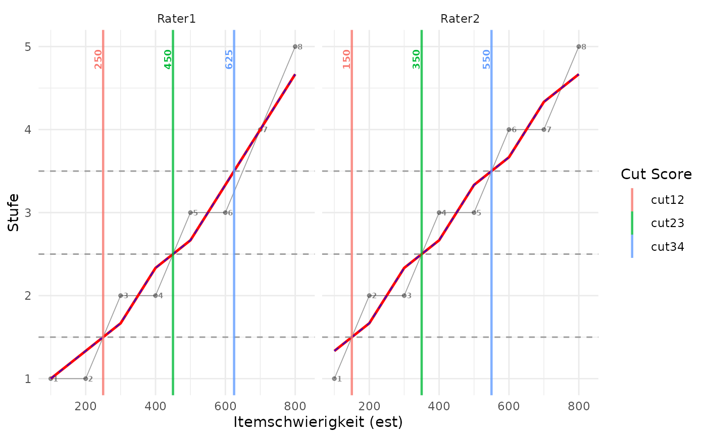
## Add residual panels:
plotCutsIDM(res, show_residuals = TRUE)
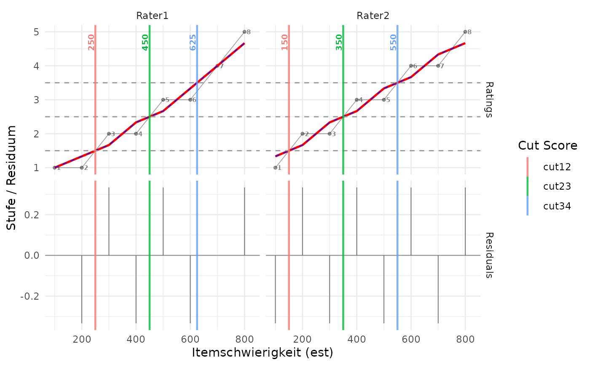
## Enlarge the labels inside the graph:
plotCutsIDM(res, show_aggregate = TRUE,
item_number_size = 3, cut_value_size = 3.5,
aggregate_label_size = 4)
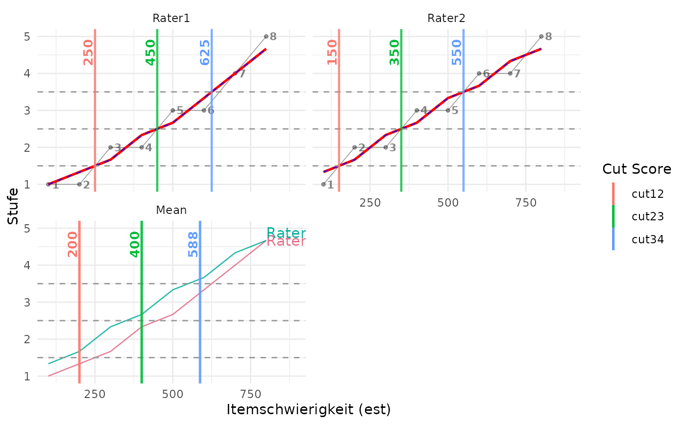
## Synthetic PVs on the item-estimate and cut metric.
set.seed(42)
population <- data.frame(
student = seq_len(200),
PV1 = rnorm(200, 450, 100),
PV2 = rnorm(200, 450, 100),
weight = runif(200, 0.5, 2)
)
## Silhouette = distribution shape only; height does NOT represent rating stages.
## Use show_caption = TRUE to include the silhouette explanation below the plot.
plotCutsIDM(res, pv_data = population, pv_cols = c("PV1", "PV2"),
weight_col = "weight", show_aggregate = TRUE,
population_height = 0.25, population_alpha = 0.15)
 ## The same shape-only silhouette stays out of residual panels.
population_long <- tidyr::pivot_longer(
population, cols = c("PV1", "PV2"),
names_to = "pv", values_to = "score"
)
plotCutsIDM(res, pv_data = population_long,
respondent_id_col = "student", pv_id_col = "pv",
pv_value_col = "score", weight_col = "weight",
show_aggregate = TRUE, show_residuals = TRUE)
## The same shape-only silhouette stays out of residual panels.
population_long <- tidyr::pivot_longer(
population, cols = c("PV1", "PV2"),
names_to = "pv", values_to = "score"
)
plotCutsIDM(res, pv_data = population_long,
respondent_id_col = "student", pv_id_col = "pv",
pv_value_col = "score", weight_col = "weight",
show_aggregate = TRUE, show_residuals = TRUE)
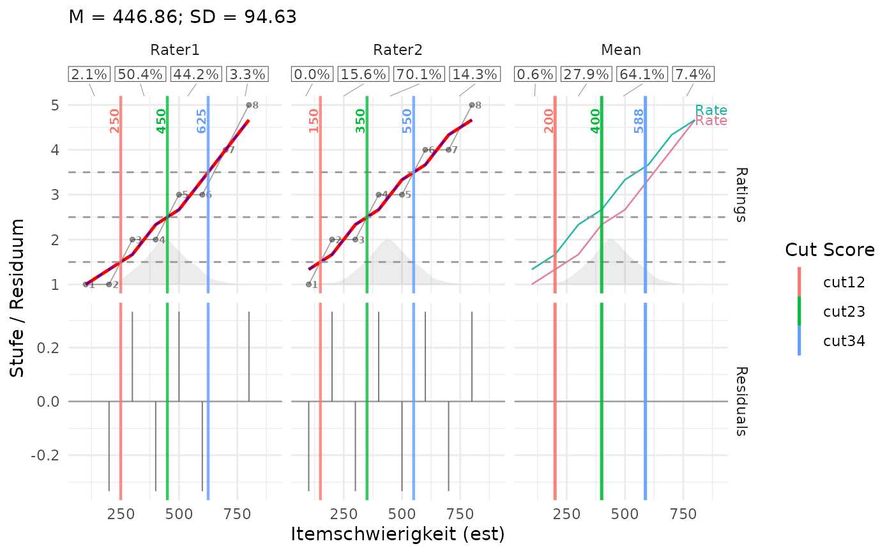
## Use a standalone plot when the density axis is needed.
plotPopulationCutsIDM(res, population, pv_cols = c("PV1", "PV2"),
weight_col = "weight")
 ## Two populations with a shared silhouette-height factor, not rating values.
population$group <- "A"
population_b <- population
population_b$group <- "B"
population_b[c("PV1", "PV2")] <- 450 +
1.3 * (population_b[c("PV1", "PV2")] - 450) + 80
populations <- rbind(population, population_b)
plotCutsIDM(res, pv_data = populations, pv_cols = c("PV1", "PV2"),
respondent_id_col = "student", weight_col = "weight",
population_col = "group",
population_colors = c(A = "#0072B2", B = "#E69F00"),
population_alpha = 0.2, show_aggregate = TRUE)
## Two populations with a shared silhouette-height factor, not rating values.
population$group <- "A"
population_b <- population
population_b$group <- "B"
population_b[c("PV1", "PV2")] <- 450 +
1.3 * (population_b[c("PV1", "PV2")] - 450) + 80
populations <- rbind(population, population_b)
plotCutsIDM(res, pv_data = populations, pv_cols = c("PV1", "PV2"),
respondent_id_col = "student", weight_col = "weight",
population_col = "group",
population_colors = c(A = "#0072B2", B = "#E69F00"),
population_alpha = 0.2, show_aggregate = TRUE)
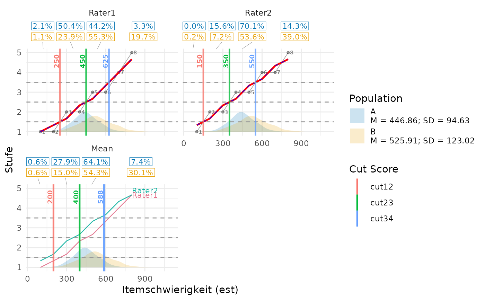
## One explicit fill color applies to all population silhouettes.
plotCutsIDM(res, pv_data = populations, pv_cols = c("PV1", "PV2"),
weight_col = "weight", population_col = "group", population_fill = "grey50")
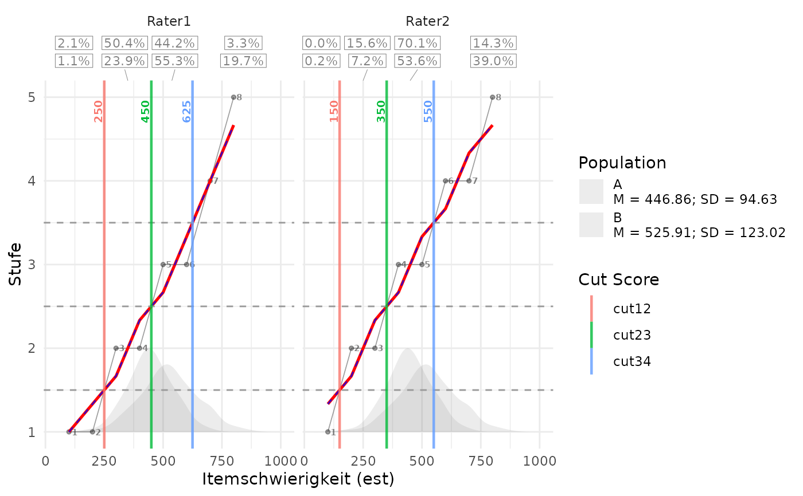
## Or use population_fill = c("#009E73", "#CC79A7") in population legend order.
## Three colors for these two groups would warn and restore the default palette.
## Long input and residuals: silhouettes still show distribution shape only.
populations_long <- tidyr::pivot_longer(
populations, cols = c("PV1", "PV2"), names_to = "pv", values_to = "score"
)
plotCutsIDM(res, pv_data = populations_long, respondent_id_col = "student",
pv_id_col = "pv", pv_value_col = "score", weight_col = "weight",
population_col = "group", show_aggregate = TRUE, show_residuals = TRUE)
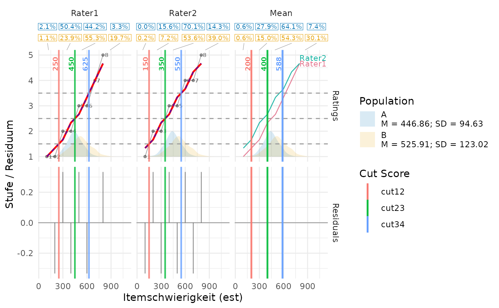
## Percentages are population shares; silhouette heights are display-only.
plotCutsIDM(res, pv_data = populations, pv_cols = c("PV1", "PV2"),
weight_col = "weight", population_col = "group",
show_aggregate = TRUE, percentage_digits = 2, percentage_size = 3.5)
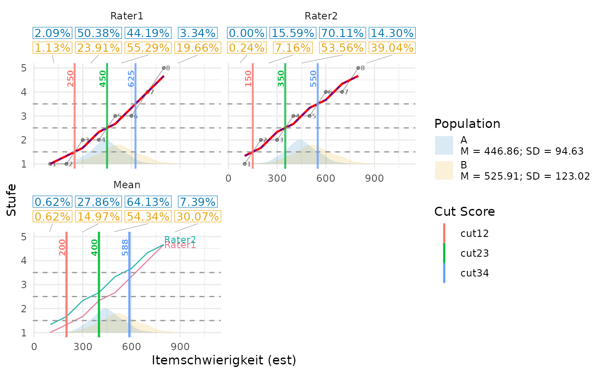
## Keep silhouettes and cut labels, but hide the percentage tables.
plotCutsIDM(res, pv_data = populations, pv_cols = c("PV1", "PV2"),
weight_col = "weight", population_col = "group", show_percentages = FALSE)
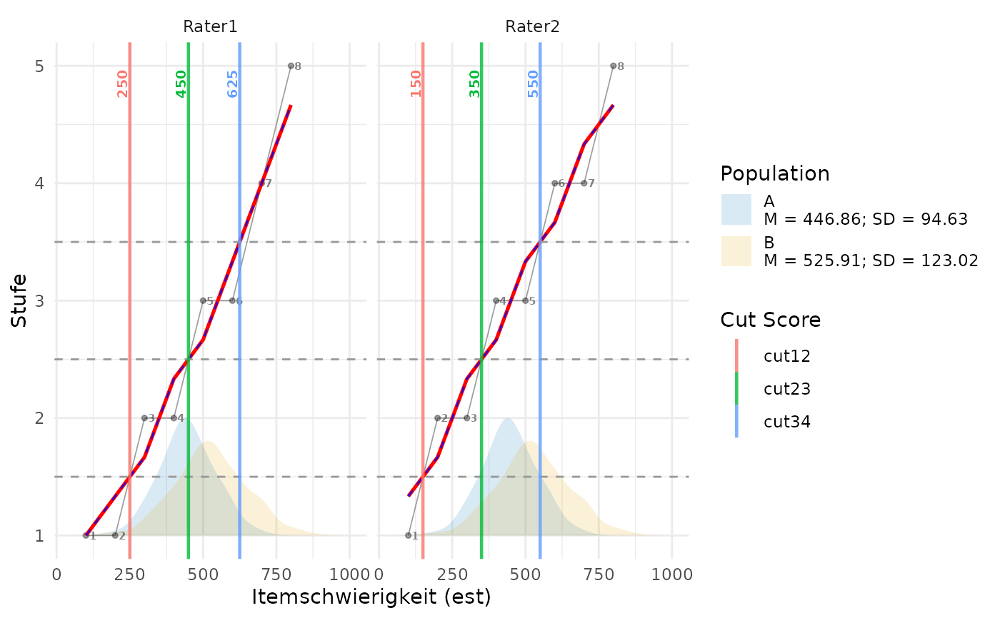
## M and SD use the same population legend as plotPopulationCutsIDM().
plotCutsIDM(res, pv_data = populations, pv_cols = c("PV1", "PV2"),
weight_col = "weight", population_col = "group",
show_residuals = TRUE, population_stats_digits = 1, show_caption = TRUE)
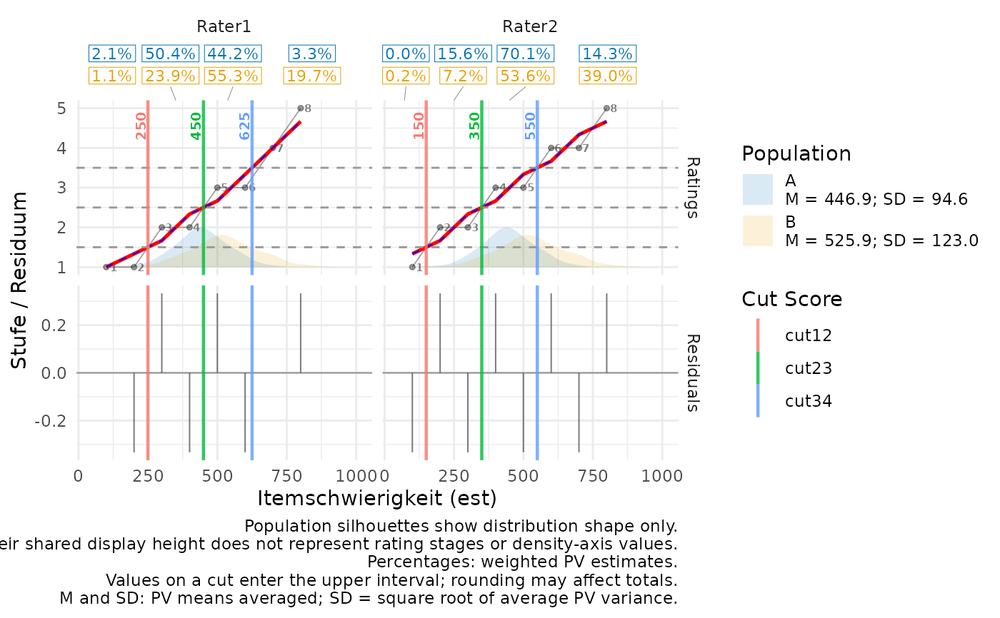
## Hide M and SD independently of interval percentages.
plotCutsIDM(res, pv_data = populations, pv_cols = c("PV1", "PV2"),
weight_col = "weight", population_col = "group", show_population_stats = FALSE)
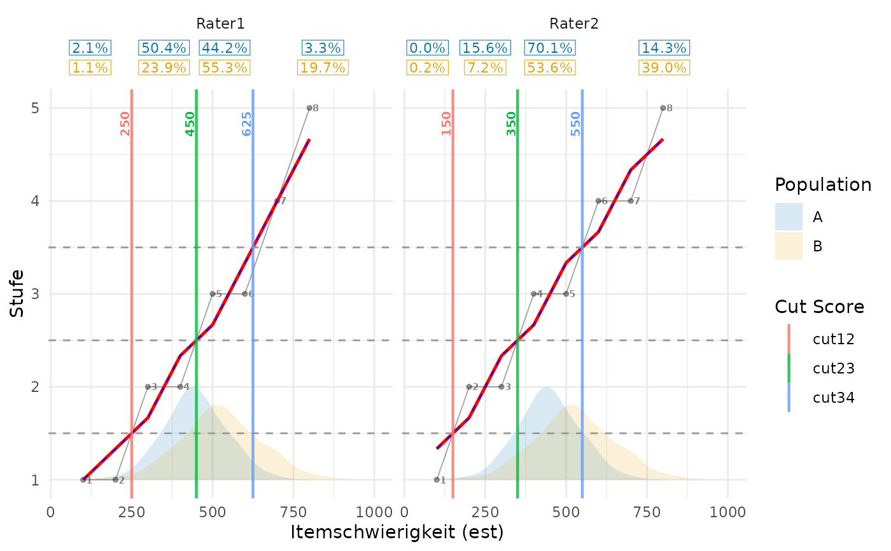